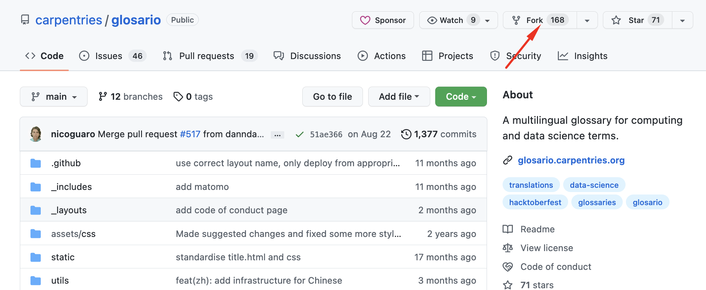
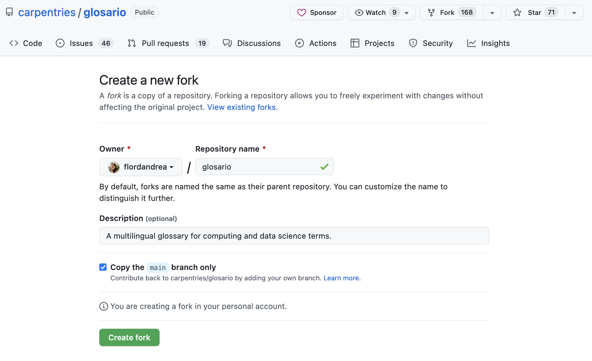
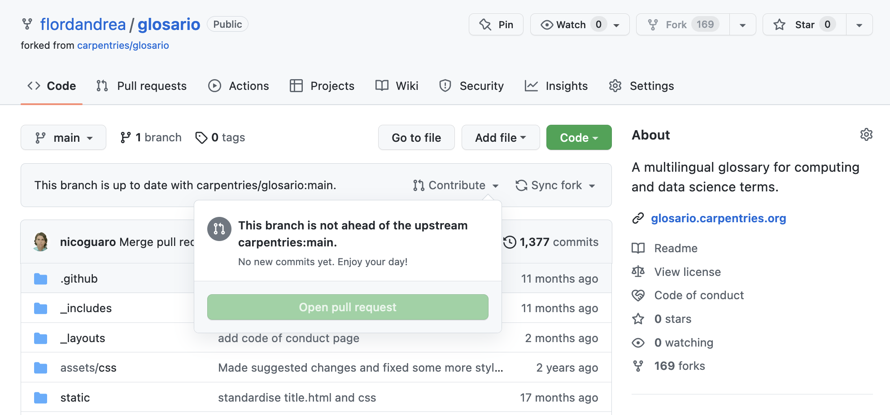
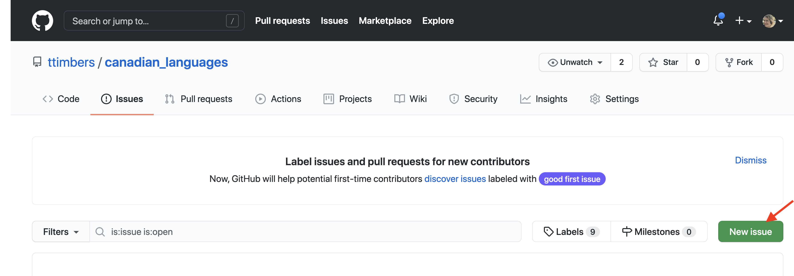
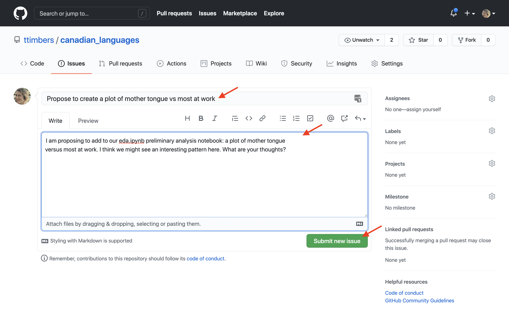

There are two main strategies we can use to work with others:
Branching
Forking
How can I fork a repository?

Go to the GitHub page of the project that you want to fork. In the upper right corner, click the icon that says “fork”. That’s it! You just forked a repo!
Developing on a forked repo

Keeping your remote (origin) up to date with the upstream remote
Create a pull request from the forked repository

Communicating using GitHub issues
The “Issues” tab on the GitHub web interface

Communicating using GitHub issues
Dialog boxes and submission button for creating new GitHub issues.

Communicating using GitHub issues
The “Closed” issues tab on the GitHub web interface.